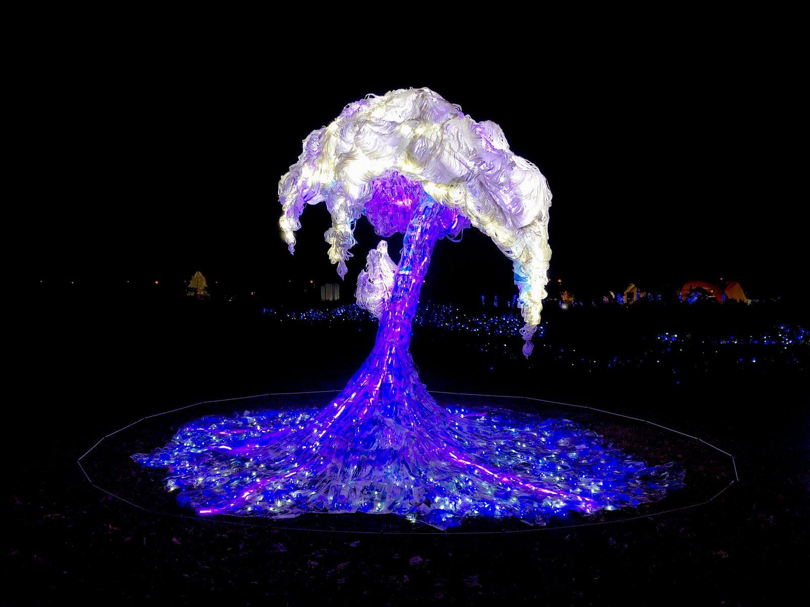

文 / 交通部觀光局
文章轉載自 / taiwan.net.tw
2019台灣燈會在屏東-30年來，史上最美麗的燈會。
藝術燈區中的21件作品由國內外藝術家攜手打造，光藝術靈感齊聚大鵬灣，以在地性和故事性，帶來視覺驚喜與想像，每件作品都值得細細品味，玩味藝術家想傳達的「燈」故事。
藝術燈區打卡亮點：
…
四、星光潮來
藝術家洪郁雯創作「星光潮來」，用回收塑膠袋、Led軟燈條做成可以飄逸在空中的海浪，讓人掀起來躺在其中看裡面的燈光投射，感覺好像在海裡，也好像在星空下感受塑膠袋飄揚，或有人觸碰也如海浪聲一般。
